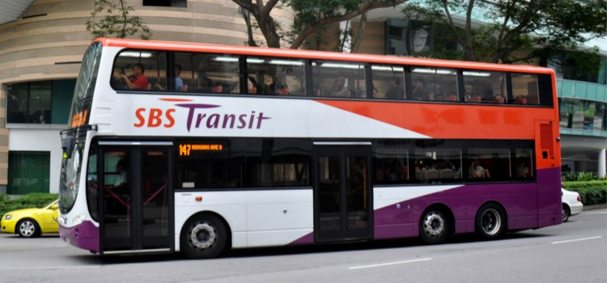

交通
公共巴士
旅途中乘搭巴士也是一個可以悠閒享受沿途城市景觀的不錯選擇。澳門的公交線路覆蓋廣，可以使用澳門通，或者投幣兩種選擇。澳門有大型公共汽車和小型公共汽車行駛在澳門市區、氹仔和路環之間，班次頻密；各車站均有用中、葡文說明、介紹各公共汽車的行走路線牌。
在澳門市區乘坐公共汽車每位澳門幣3.2元，往氹仔4.2元，往路環5元，往黑沙海灘6.4元，往澳門國際機場4.2元。乘客上車前，自備硬幣，車上不設找換。所有公共汽車均備空調。公共汽車行駛時間分別由早上6：00至晚上24：00

圖：巴士
計程車
澳門的出租是黑色車身奶白色車頂，並在車頂安裝有“的士”字樣標誌。出租車起程價（首1600米）收費澳門幣17元，之後每260米加收2元，中途停車收費每1分鐘2元，如有大件行李，每件加收3元。
從澳門往路環或在澳門國際機場的士候客區乘車，除了車資外，另收附加費5元；氹仔往路環加收2元附加費。另外，澳門還有“電召的士”，其收費方法與出租車相同。
電召的士電話：0853-28519519
直升機
香港或深圳到澳門除了陸路、海路外，直升機也是一種非常便捷的交通工具。直升機停機坪在外港客運碼頭天台，往來香港上環空中快線直升機場（港澳客輪碼頭）約16至19分鐘，往來深圳寶安國際機場日航約15分鐘，夜航25分鐘。
票價
1、普通日子
澳門往香港 澳門幣3900元 （約HK$3787）
澳門往深圳 澳門幣5400元 （約HK$5242）
2、農曆新年票價（年廿八至年初八）
澳門往香港 澳門幣4200元 （約HK$4078）
澳門往深圳 澳門幣5700元 （約HK$5534）